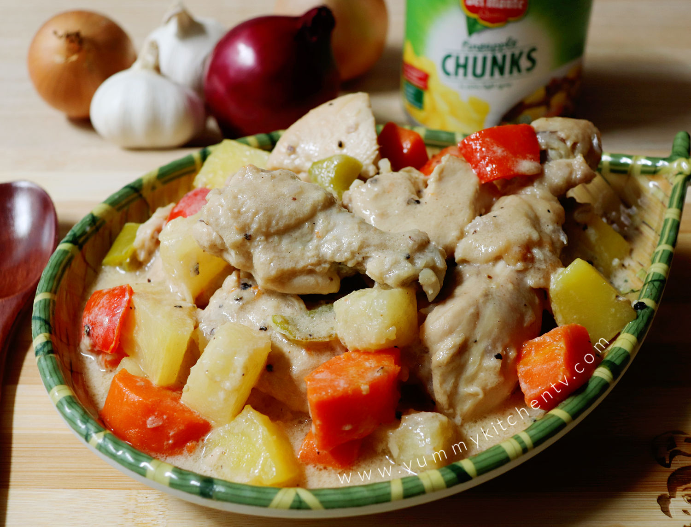

Creamy Pineapple Chicken Recipe
Creamy Pineapple Chicken is a comforting Filipino dish that blends savory and sweet in every bite. Tender chicken is simmered in a rich,
creamy sauce with the natural sweetness of pineapple, creating a flavor that’s both hearty and refreshing. Often served at family gatherings and special occasions, this dish pairs beautifully
with steamed rice and is a favorite for those who love a touch of tropical sweetness in their meals.

Ingredients
- 1 tablespoon canola oil
- 1 medium red pepper, seeded, cored and cut into chunks
- 1 onion thinly sliced
- 3 cloves garlic minced
- 3 pounds chicken cut into serving parts
- 1 cup pineapple juice
- 1 cup pineapple chunks
- 1 cup table cream
- salt and pepper to taste
How To Cook
- Heat oil in a pot over medium heat.
- Sauté bell peppers for 30 seconds, then set aside.
- In the same pan, cook onions and garlic until softened.
- Add chicken and cook until lightly browned.
- Add vinegar. Stir and cook for 10 minutes.
- Pour in pineapple juice, bring to a boil, then simmer covered until chicken is tender.
- Stir in pineapple chunks and cream, season with salt and pepper, and simmer until the sauce slightly thickens.
- Add bell peppers, cook briefly until tender-crisp, and serve hot.
Tips & Tricks
- After adding the cream, keep the heat low and let it simmer gently. Avoid boiling to prevent the sauce from curdling or separating.